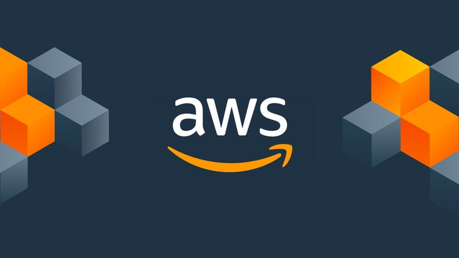

AWS Cloud Computing
This project performs an analysis of the NYC 311 service requests to identify patterns and complaint types by agency and borough. The project utilizes AWS services for data storage, processing, and visualization."
More details
Problem
The mayor's office wants to know whether certain types of 311 complaints are likely to be resolved within 3 days - can we build a model to flag fast vs. slow resolutions at intake?
Approach
Two main datasets were used: complaints.csv and agencies.csv. The complaints dataset contains 311 service request records, while the agencies dataset provides information about the city agencies responsible for handling those requests. The data was stored in AWS S3 and queried using AWS Athena to perform exploratory data analysis and feature engineering. A machine learning model was then trained using AWS Sagemaker to predict whether a complaint would be resolved within 3 days based on features such as problem, agency, borough, and hour of the day.
Results & Impact
The model achieved an accuracy of 78% on the test set, indicating that it can reasonably predict which complaints are likely to be resolved quickly. This information can help the mayor's office prioritize resources and improve response times for certain types of complaints.